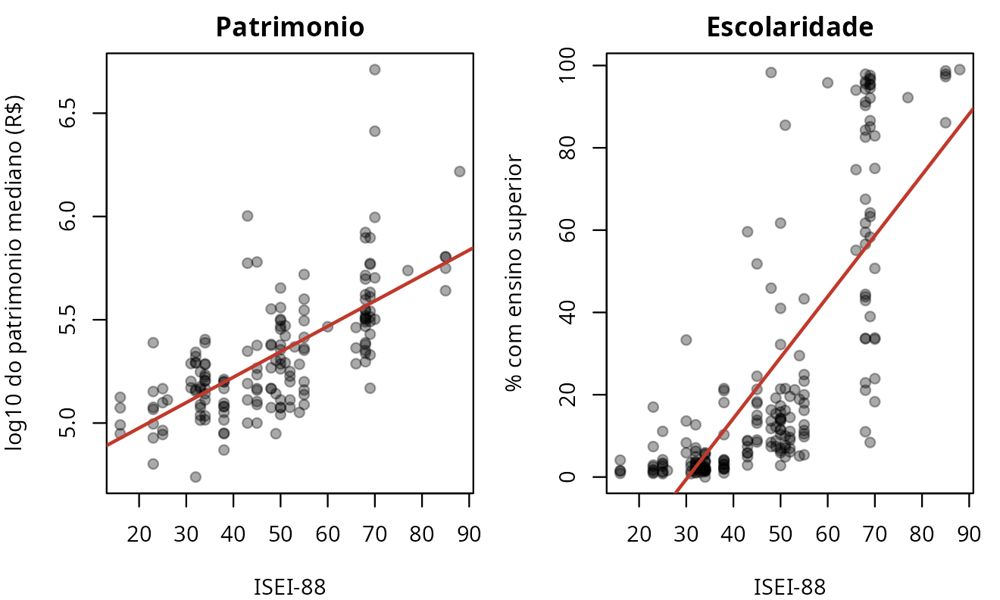
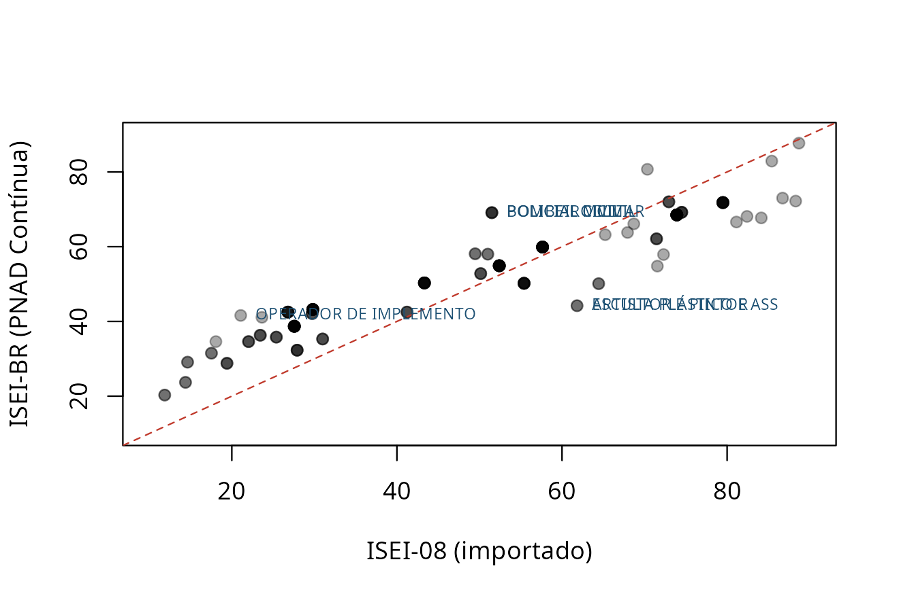

A medida se sustenta? Validação contra um critério externo
Fonte:vignettes/validacao.Rmd
validacao.RmdTodo o resto deste pacote é tradução: um código do TSE vira um ISCO, que vira um ISEI. Nada nessa cadeia se afere contra coisa alguma fora dela — e um crosswalk internamente consistente pode estar inteiramente errado.
Esta vinheta faz a única pergunta que importa: as posições que a medida atribui correspondem a algo observável e independente?
O critério são duas variáveis que o próprio TSE coleta e que
não entram na construção da medida em momento nenhum: o
patrimônio declarado na candidatura e o grau de instrução. Elas estão
agregadas por ocupação em tse_validacao.
library(ocupacoesBR)
v <- tse_validacao
v$isei <- isco88_para_isei(tse_isco$isco88[match(v$cod_tse, tse_isco$cod_tse)])
v$rotulo <- tse_para_rotulo(v$cod_tse)
v <- v[!is.na(v$isei), ]
# A mediana de patrimonio e NA onde faltam declaracoes de bens suficientes (ver
# ?tse_validacao). A escolaridade esta medida em todas as linhas; o patrimonio,
# so nestas.
vb <- v[!is.na(v$mediana_patrimonio), ]
c(com_escolaridade = nrow(v), com_patrimonio = nrow(vb))
#> com_escolaridade com_patrimonio
#> 207 165O resultado
r <- function(x, y, m = "pearson") round(cor(x, y, method = m), 3)
# A correlação no nível do INDIVÍDUO sai dos somatórios publicados em
# `tse_dispersao_patrimonio`, sem microdado: veja `?tse_dispersao_patrimonio`.
d <- tse_dispersao_patrimonio
N <- sum(d$n); sx <- sum(d$isei88 * d$n); sy <- sum(d$soma_log)
sxx <- sum(d$isei88^2 * d$n); syy <- sum(d$soma_log2)
sxy <- sum(d$isei88 * d$soma_log)
r_individual <- (N * sxy - sx * sy) / sqrt((N * sxx - sx^2) * (N * syy - sy^2))
data.frame(
criterio = c("% com ensino superior", "log da mediana de patrimonio"),
n = c(nrow(v), nrow(vb)),
pearson = c(r(v$isei, v$pct_superior),
r(vb$isei, log(vb$mediana_patrimonio))),
spearman = c(r(v$isei, v$pct_superior, "spearman"),
r(vb$isei, log(vb$mediana_patrimonio), "spearman")))
#> criterio n pearson spearman
#> 1 % com ensino superior 207 0.765 0.816
#> 2 log da mediana de patrimonio 165 0.681 0.695Correlações dessa ordem, contra critérios que não participaram da construção da medida, são evidência forte de que o ISEI atribuído às ocupações brasileiras mede o que promete medir.

O contraste que é o verdadeiro resultado
No nível do indivíduo, a correlação entre ISEI e patrimônio é de apenas 0,207. No nível da ocupação, é 0,681. Essa diferença não é defeito: é a definição do que o ISEI é.
Uma medida de posição ocupacional explica a variância entre ocupações e quase nada da variância dentro de cada uma. Advogados variam enormemente em patrimônio entre si, e o ISEI não tem nada a dizer sobre isso — nem deveria.
A consequência é direta: não use ISEI como proxy de renda individual. Ele responde “que posição esta ocupação ocupa na estrutura”, não “quanto esta pessoa tem”.
Onde a medida não é monótona
A correlação alta esconde inversões locais que importam:
alvo <- c("169", "257", "111", "265", "113", "601")
d <- vb[vb$cod_tse %in% alvo, c("rotulo", "isei", "pct_superior",
"mediana_patrimonio")]
d[order(-d$isei), ]
#> rotulo isei pct_superior mediana_patrimonio
#> 9 MÉDICO 88 99.0 825376
#> 121 EMPRESARIO 68 22.9 249001
#> 126 PROFESSOR DE ENSINO FUNDAMENTAL 66 74.8 96893
#> 57 COMERCIANTE 51 7.1 148044
#> 11 ENFERMEIRO 43 59.6 111353
#> 188 AGRICULTOR 23 2.5 122395O comerciante e o empresário têm ISEI de classe média e patrimônio de classe alta; a professora tem ISEI alto e patrimônio modesto. São duas réguas diferentes — status ocupacional e capital econômico —, e elas discordam por desenho, não por erro.
Quem cruzar as duas num mesmo gráfico precisa dizer isso ao leitor. É
exatamente a distinção que tse_para_componente_alta() opera
ao separar a classe alta em proprietária e credenciada.
A anomalia do cuidado
data.frame(
regua = c("ISEI-88", "ISEI-08"),
enfermagem = c(tse_para_isei("113"), round(tse_para_isei08("113"), 1)))
#> regua enfermagem
#> 1 ISEI-88 43.0
#> 2 ISEI-08 68.7
v$pct_superior[v$cod_tse == "113"]
#> [1] 59.6O ISEI-88 põe a enfermagem abaixo do escriturário, apesar de quase 60% de ensino superior. A revisão de 2008 da OIT corrigiu isso, e o ISEI-08 a promove em mais de vinte pontos.
Isso não é peculiaridade brasileira, mas pesa mais aqui: o país tem um vale de ocupações femininas de alta escolaridade e baixa remuneração — enfermagem, docência, assistência social. Para análise de gênero, prefira a ISCO-08.
fem <- v$pct_mulher > 50
round(c(feminina = mean(v$isei[fem]), masculina = mean(v$isei[!fem])), 1)
#> feminina masculina
#> 46.1 47.6
round(c(feminina = mean(v$pct_superior[fem]),
masculina = mean(v$pct_superior[!fem])), 1)
#> feminina masculina
#> 32.1 23.8Ocupações majoritariamente femininas têm mais escolaridade e menos ISEI. A régua importada carrega esse viés, e declará-lo é parte de usá-la bem.
A régua estimada no Brasil, contra o mesmo critério
Até aqui a medida testada foi importada.
tse_para_isei_br() traz a régua estimada na PNAD Contínua,
pelo mesmo procedimento de 1992, e ela pode ser submetida ao mesmo
critério.
v$isei08 <- tse_para_isei08(v$cod_tse)
v$isei_br <- tse_para_isei_br(v$cod_tse)
ok <- stats::complete.cases(
v[, c("isei", "isei08", "isei_br", "pct_superior", "mediana_patrimonio")])
w <- v[ok, ]
r <- function(x, y, m = "pearson") round(stats::cor(x, y, method = m), 3)
data.frame(
regua = c("ISEI-88", "ISEI-08", "ISEI-BR"),
escolaridade = sapply(w[c("isei", "isei08", "isei_br")], r, w$pct_superior),
patrimonio = sapply(w[c("isei", "isei08", "isei_br")], r,
log(w$mediana_patrimonio)),
patrimonio_rho = sapply(w[c("isei", "isei08", "isei_br")], r,
log(w$mediana_patrimonio), m = "spearman"),
row.names = NULL)
#> regua escolaridade patrimonio patrimonio_rho
#> 1 ISEI-88 0.775 0.681 0.695
#> 2 ISEI-08 0.782 0.676 0.708
#> 3 ISEI-BR 0.741 0.716 0.768São 165 ocupações, as mesmas nas três linhas.
O resultado precisa ser lido com cuidado, porque as duas colunas não têm o mesmo estatuto. A escolaridade entra na construção do ISEI-BR, então correlação alta ali não provaria nada. O patrimônio não entra em régua nenhuma, e é o único critério genuinamente externo desta tabela.
É justamente no patrimônio que a régua brasileira vai melhor, e na escolaridade que ela vai um pouco pior. Isso não é acidente. O ângulo estimado dá mais peso à renda do que à escolaridade, e no Brasil renda ocupacional e escolaridade ocupacional descolam mais do que descolam nos países onde a régua importada foi calibrada. A régua importada ordena os candidatos pela escolaridade das suas ocupações; a brasileira os ordena pelo que essas ocupações pagam aqui.
d <- w[order(-abs(w$isei_br - w$isei08)), ]
plot(w$isei08, w$isei_br, pch = 19, col = "#00000055",
xlab = "ISEI-08 (importado)", ylab = "ISEI-BR (PNAD Contínua)",
xlim = c(10, 90), ylim = c(10, 90))
# a diagonal marca a igualdade de ESCORE, nao a de posicao: as duas escalas
# tem dispersoes diferentes, e a leitura correta vem logo abaixo
abline(0, 1, col = "#C0392B", lty = 2)
text(d$isei08[1:6], d$isei_br[1:6], substr(d$rotulo[1:6], 1, 22),
pos = 4, cex = 0.65, col = "#1B4F72", xpd = NA)
A diagonal vermelha do gráfico é tentadora e engana. As duas escalas não têm a mesma dispersão: o ISEI-BR sai de um min–max sobre as células de estimação, e o seu desvio padrão nestas ocupações é bem menor que o do ISEI-08.
Numa escala mais estreita, o topo cai e a base sobe por construção. A conta que mostra o tamanho do problema é esta:
z <- function(x) (x - mean(x)) / sd(x)
c(bruta = cor(w$isei_br - w$isei08, w$isei08),
padronizada = cor(z(w$isei_br) - z(w$isei08), w$isei08))
#> bruta padronizada
#> -0.8425687 -0.1731228A diferença bruta correlaciona-se a −0,85 com o próprio ISEI-08 — ler nela uma relocação substantiva é ler, em boa parte, de onde a ocupação partiu. Igualando média e desvio, a correlação some. Então a leitura tem de ser feita sobre a diferença padronizada:
w$d <- z(w$isei_br) - z(w$isei08)
sobem <- head(w[order(-w$d), c("rotulo", "isei08", "isei_br")], 6)
descem <- head(w[order(w$d), c("rotulo", "isei08", "isei_br")], 6)
rbind(sobem, descem)
#> rotulo isei08 isei_br
#> 36 BOMBEIRO CIVIL 51.50 69.1
#> 101 POLICIAL CIVIL 51.50 69.1
#> 102 POLICIAL MILITAR 51.50 69.1
#> 122 BOMBEIRO MILITAR 51.50 69.1
#> 140 DIRETOR DE EMPRESAS 70.34 80.7
#> 9 MÉDICO 88.70 87.7
#> 88 ESCULTOR E PINTOR 61.82 44.2
#> 89 ARTISTA PLÁSTICO E ASSEMELHADOS 61.82 44.2
#> 214 SACERDOTE OU MEMBRO DE ORDEM OU SEITA RELIGIOSA 71.55 54.8
#> 51 CANTOR E COMPOSITOR 64.44 50.1
#> 52 MÚSICO 64.44 50.1
#> 104 PROFESSOR E INSTRUTOR DE FORMACAO PROFISSIONAL 72.30 57.9As que mais sobem são as de segurança pública: policial civil e militar, bombeiro. São trabalhos que a régua importada põe no meio da tabela e que no Brasil pagam acima do que o escore internacional sugere. Ao lado deles aparecem o diretor de empresas e o médico — e é justamente isso que a comparação bruta escondia, porque ocupações de topo não têm para onde subir numa escala comprimida.
As que mais descem são as profissões artísticas, o clero e as liberais da saúde: escultor, artista plástico, sacerdote, cantor, veterinário, farmacêutico. Credencial alta, remuneração modesta. É a mesma anomalia do cuidado vista pelo outro lado: a régua importada mede sobretudo credencial, e no Brasil credencial e remuneração andam mais separadas do que ela supõe.
O que esta vinheta não prova
O critério continua sendo o patrimônio de candidatos, que não são a população. Isso não mudou. A régua brasileira foi estimada na população e validada em candidatos, o que é melhor do que estimar e validar nos mesmos candidatos, mas não é o mesmo que validá-la na população.
Quatro coisas seguem em aberto, e convém dizê-las com a mesma clareza com que esta vinheta dizia, antes, que a régua não era brasileira.
A primeira é que a mediação não é completa. O procedimento de 1992 supõe que a ocupação carrega todo o efeito da escolaridade sobre a renda, e no Brasil ela carrega 58.4%. O resto é escolaridade que paga dentro da mesma ocupação. A régua registra esse número em vez de escondê-lo, mas registrá-lo não o resolve.
A segunda é que a régua é de um ano só, 2025, em valores nominais. Ela não forma série, e uma análise que atravesse décadas não pode usá-la como se formasse.
A terceira é que 242 das 590 linhas foram apuradas num grupo mais
grosso que a própria ocupação, por falta de amostra. A coluna
nivel diz quais, e quem depende de uma ocupação específica
deve conferi-la antes.
A quarta é que a correlação no nível da candidatura, em
tse_dispersao_patrimonio, existe só para o ISEI-88, porque
a tabela de somatórios é indexada por faixas daquela régua. Refazê-la
para a brasileira é trabalho de outra rodada.